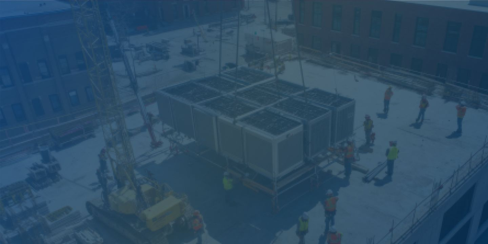
Bridge construction & maintenance operational intelligence
Creating Operational Visibility Across Complex Bridge Projects
Bridge construction and maintenance projects present unique operational challenges.
Personnel often work across multiple levels.
Maintaining visibility across these environments is critical to supporting workforce safety, operational coordination and effective emergency response.
iottag helps bridge projects create a live operational understanding of their environment through Operational Intelligence.
Understanding complex bridge environments
Bridge projects are dynamic operational environments where multiple activities occur simultaneously
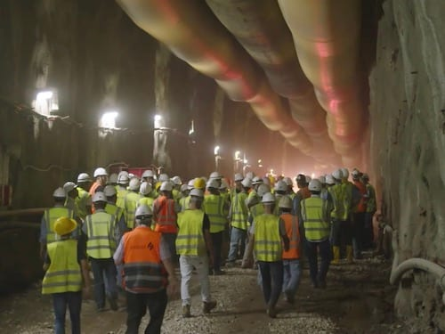
Construction activities
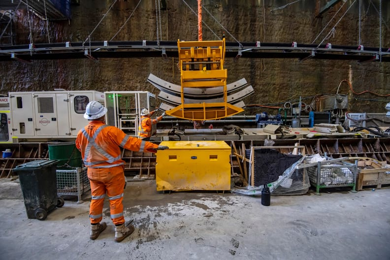
Maintenance works
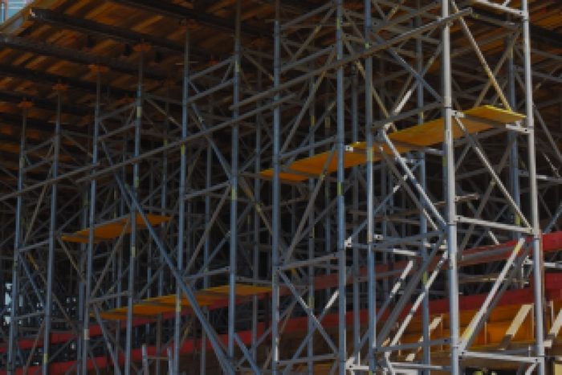
Scaffolding access systems
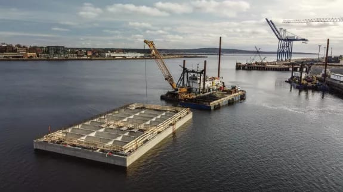
Marine operations
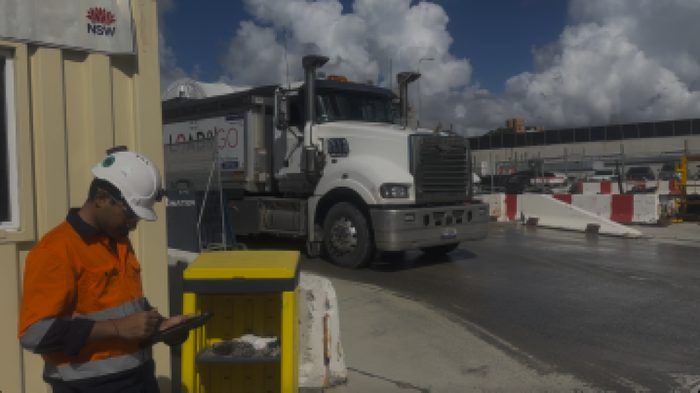
Traffic management
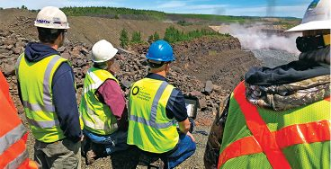
Environmental monitoring
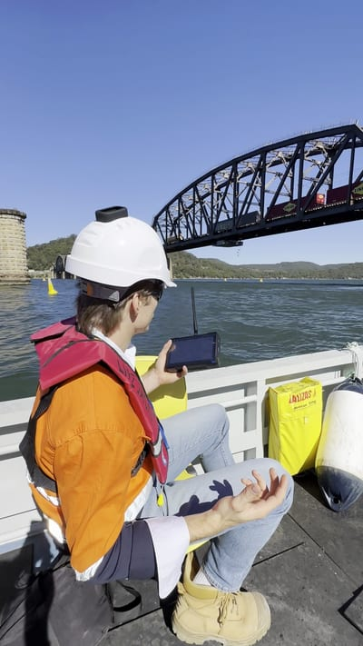
Emergency preparedness
The challenge is maintaining visibility across the entire operational environment.
The Operational Digital Twin creates a shared operational understanding that helps organisations understand:
Workforce visibility across multiple levels
Personnel often operate across large structures with multiple access points and work zones.
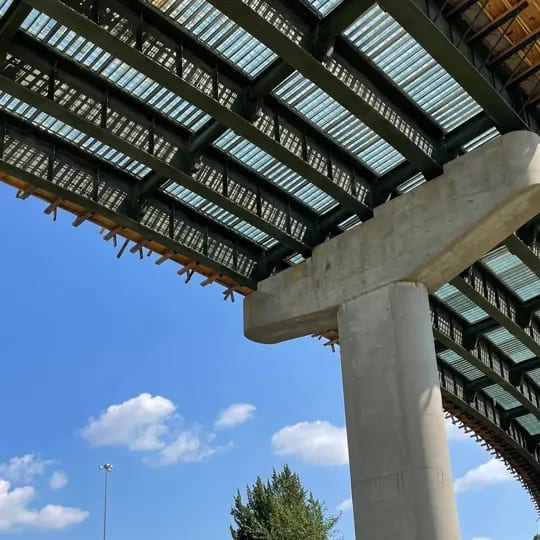
Above deck
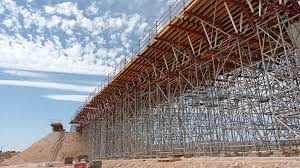
Across scaffolding systems
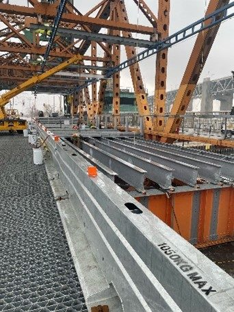
Below deck
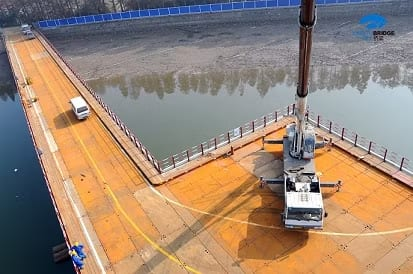
On temporary work platforms
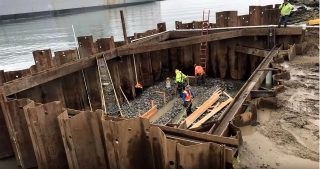
Inside structural cavities
Maintaining awareness of workforce locations can be challenging.
The platform helps organisations understand workforce activity across the entire structure, improving accountability, coordination and emergency preparedness.
Over-water operations &
Marine coordination
Many bridge projects require work to be performed above or adjacent to waterways.
This introduces additional operational complexity.
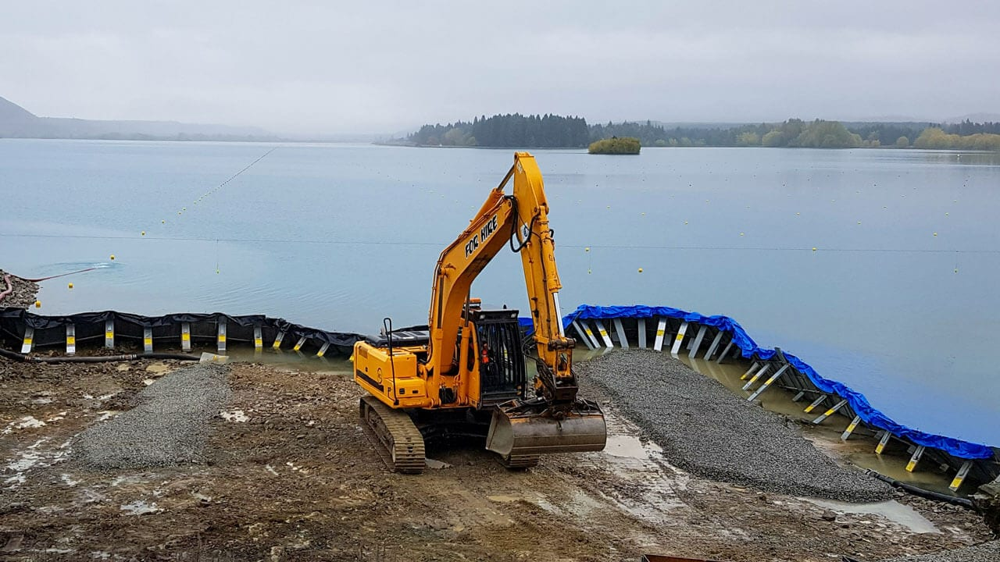
The platform helps organisations maintain visibility across both land-based and marine operations, creating a more complete operational understanding of the project environment.
Applications include:
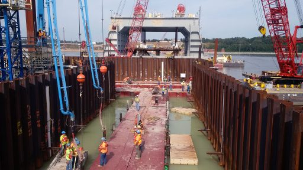
Emergency response &
Incident management
Bridge projects often involve complex access arrangements and challenging emergency response scenarios.
The ability to quickly understand workforce locations and changing conditions can significantly improve response effectiveness.
The platform supports:
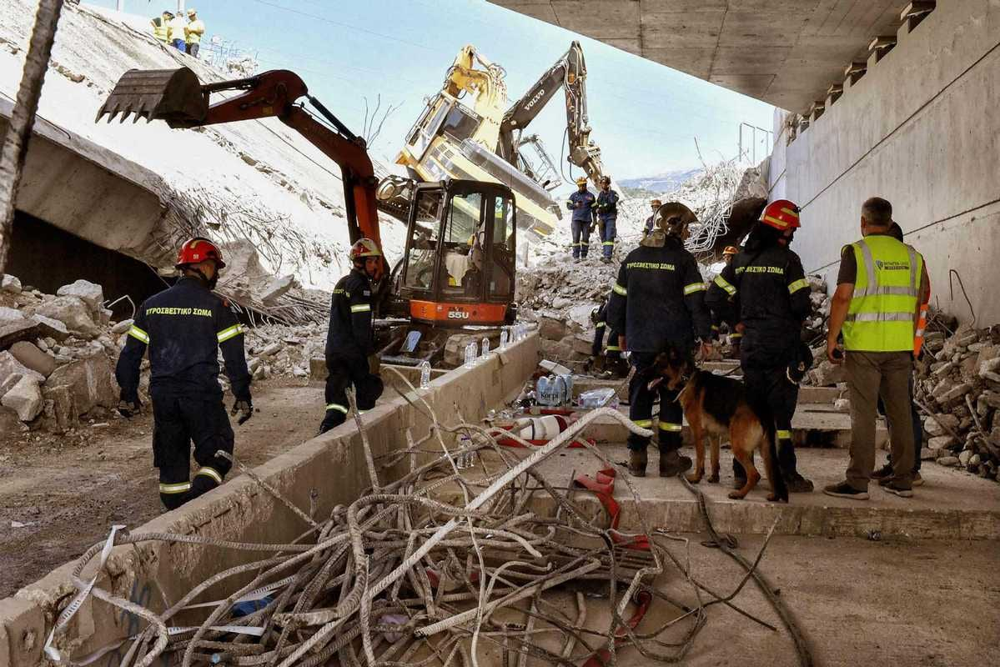
Understanding changing operational conditions
Bridge projects are influenced by a wide range of changing operational factors.
Weather conditions
Wind exposure
Marine activity
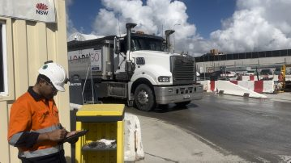
Traffic interactions
Workforce deployment
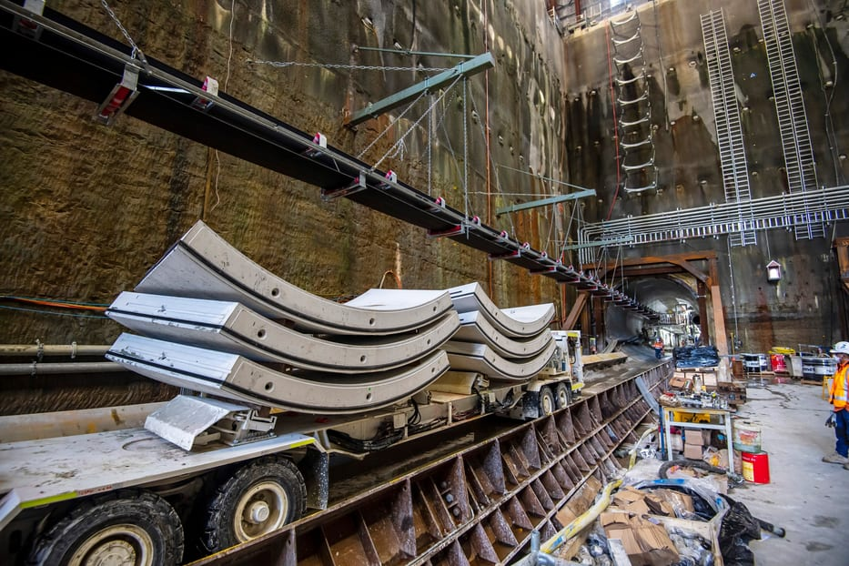
Equipment operations
The Operational Digital Twin helps organisations understand how these conditions interact and influence project activities.
AI-powered operational summaries help translate complex operational information into clear operational insight.
Example
Visibility for project leadership & asset owners
Bridge projects involve multiple stakeholders.
Operational Analytics & Benchmarking provides visibility across project performance, workforce activity and operational conditions, supporting governance and informed decision-making.

Contractors
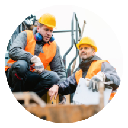
Project Delivery Team
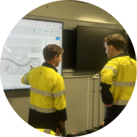
Asset Owner

Government Authority
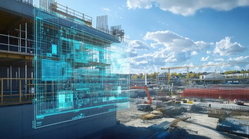
Operational intelligence for bridge projects
Create a shared operational understanding across bridge construction, refurbishment and maintenance environments.